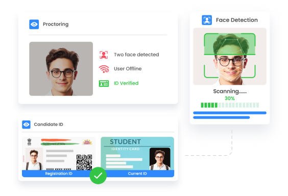
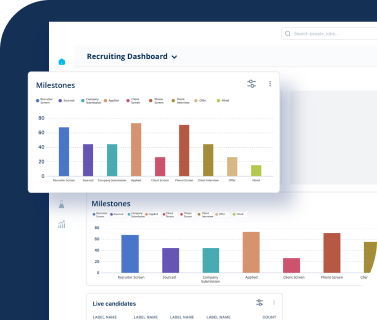
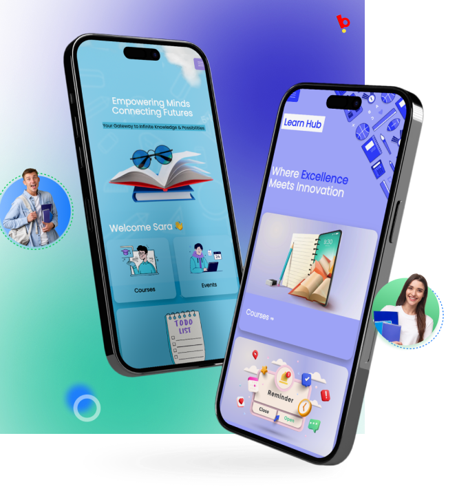

Likewise, the Pre-Employment Assessment domain has also witnessed numerous modifications during the last 10 to 12 years. Technology advancements have primarily drove these changes as hiring practices evolve and have provided opportunities for organizations to assess and select quality talent.
The Big Question
The pre-employment assessment arena is surely changing but companies are still battling to hire the best candidates for their departments. A key question, therefore, arises: What these new trends are and are these trends relevant to all the organizations?
The Trends
Experts at Brainmeasures – an ISO 9001-2015 certified online advanced training certifications, pre-employment, and skill-assessment solutions provider – have deep dived in the topic to explore and understand these trends. The Brainmeasures research team identified five prominent pre-employment assessment trends, including automated online proctoring, applicant tracking systems, Gamification, mobile-enabled assessments, and applicant reactions.
Some of these trends shall appear to be quite familiar as they have been in practice longer than this past decade; however, with the advancements in the recruiting arena, those have been improvised too.
Automated Online Proctoring
Automated Online Proctoring is the most acknowledged technological developments of the last decade that altered the way pre-employment tests used to administer. Automated Online Proctoring enabled organizations to test thousands of applicants simultaneously, generate detailed score cards within seconds, and provide quick result-analysis to the hiring managers.

Key Features:
- Eliminates physical human test administrator to monitor the skill testing event
- Ensures unbiased, authentic, and fair skill assessments
- Facilitates skill assessment of candidates at multiple remote locations
- Enables applicants to attempt the assessments anytime from any location of their ease
- liminates the need to store or secure the conventional paper-and-pencil type assessments
- Saves recruiter’s time, efforts, and costs for hiring candidates
- Eliminates the need to arrange for skill-testing facilities
Applicant Tracking System (ATS)
Applicant Tracking System (ATS) was first introduced during the 1990s and now considered as a standard feature of skill assessments that enable recruiters to collect and store huge volumes of applicant’s information, including application forms, tests, and other documents (valid Government identification proofs, family details, and others).
ATSs have evolved since their launch, especially in their capability to integrate skill assessments. Recruiters can select from a range available ATSs and settle on the system that will best fit their company’s requirements. If a company decides to go for an ATS, hiring managers can Google the varied capabilities of ATSs for easy comparison and to determine which system is best to implement for their organization.
Key Features:
Quickly generates skill assessments’ results
Facilitates dynamic reporting and analysis on candidates’ information
Generates and sends automated emails (including assessment reminders) to applicants
Seamlessly filters the poor performers to ensure efficient recruitment
Eliminates the need for paper reporting, thus lowers administrative costs
Enables automated legal and compliance tracking
Enables organizations to save their time and efforts for hiring candidates
Stores and monitors information for a large pool of candidates
Unifies applications, candidate’s resumes and assessments to ensure lesser applicant dropouts
Smartly connects the skill testing platform for multiple or remote company locations
Customizes to fit the organizations’ requirements

ATSs can conveniently be used by all sizes of enterprises (from small to large) and configure those according to the pool of their respective applicants and the amount of information to be captured for each applicant.
Gamification
Gamification is essentially a skill testing platform where recruiters integrate Gaming elements / features to the skill assessments for making those more engaging for participants’. Instead of just asking multiple choice questions (MCQs), coding problems, and / or aptitude or personality tests, recruiters include Gaming features like rules, scores, medals, badges, test levels, comparative scoreboards, and many more interesting Gaming elements for a more captivating candidate experience.
Key Features:
- Enables applicants to demonstrate their expertise
- Enables recruiters to evaluate applicants on multiple skills, like personality, problem-solving, multi-tasking, and others
- Adds Gaming elements for a more engaging experience for applicants
- Facilitates a realistic preview of the job
- Minimizes the time spent on skill assessments
- Attracts younger talent
- Encourages favorable impressions for company’s technology inclination
- Relieves candidate’s concerns associated with their skill assessments and selection
Gamification in skill assessments has witnessed positive outcomes for varied domains (including technology, defense, healthcare, government, among others) and is fast becoming a popular among the recruiters for accomplishing their aspirations to hire best talent for their organizations.
Mobile-Enabled Skill Assessments
Mobile-Enabled Skill Assessments is a fast adapting skill testing mechanism by the organizations as the usage of mobile devices (like smart-phones, tablets, and others) has increased among the candidates. Moreover, recruiters can reach to a large pool of candidates more conveniently through mobile-enabled skill assessments than via conventional non-mobile devices, like personal computers.
Brainmeasures’ industry experts anticipate the mobile device usage will continue to increase substantially in the near term.

Key Features:
- Ensures wider availability of the skill assessments across multiple platforms
- Enables candidates to attempt skill assessments conveniently from anywhere and at anytime
- Generates positive vibes among the candidates to recognize company as a technologically upgraded enterprise
- Empowers companies to reach to a larger pool of applicants
- Minimizes the overall costs related to skill testing
Mobile devices are capable of seamlessly processing high-end information. Recruiters are, therefore, integrating mobile device assessments into their skill assessment initiatives and candidate selection processes.
Applicants’ Reviews
Experts at Brainmeasures – an ISO 9001-2015 certified online advanced training certifications, pre-employment, and skill-assessment solutions provider – have deep dived in the topic to explore and understand these trends. The Brainmeasures research team identified five prominent pre-employment assessment trends, including automated online proctoring, applicant tracking systems, Gamification, mobile-enabled assessments, and applicant reactions.
Some of these trends shall appear to be quite familiar as they have been in practice longer than this past decade; however, with the advancements in the recruiting arena, those have been improvised too.
Key Features:
Moreover, attaining relevant reviews from the applicants are quite critical for the organizations, therefore, recruiters conduct surveys, typically post the skill assessments or during selection processes.
To Sum up
Recruiters are consistently in search for quality talent, and these trends can enable organizations to quickly assess, shortlist, hire the most appropriate candidates that best match their job requirements, while also ensure that applicants have a positive skill assessment and selection process experience.
Experts at Brainmeasures – the leading provider of future-ready online pre-employment and skill assessment solutions – precisely understand the needs of modern recruiters and deliver the most relevant technology solutions to ensure the best talent is acquired for their organizations.